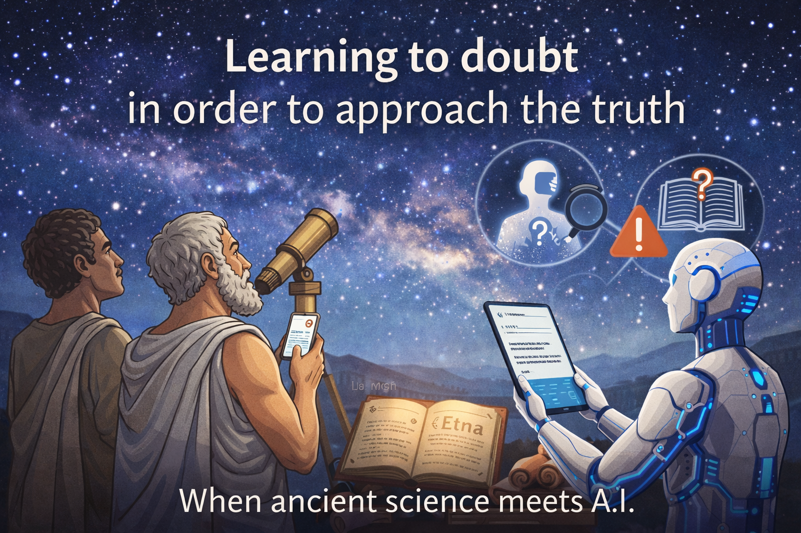
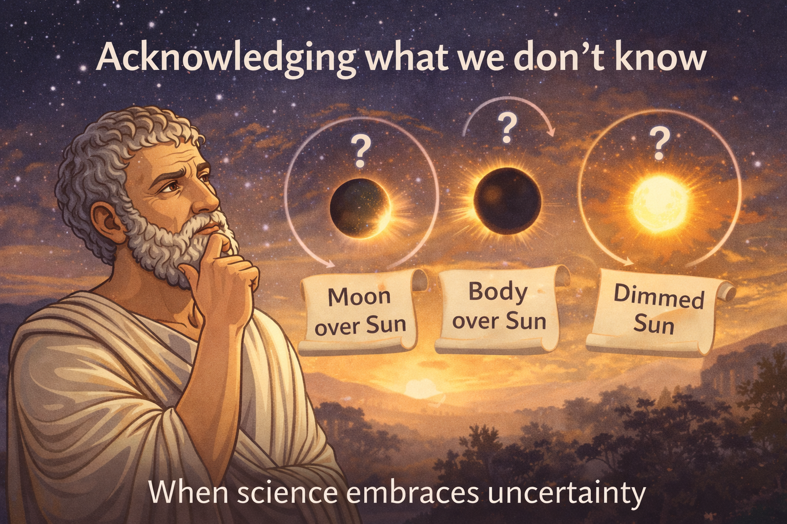
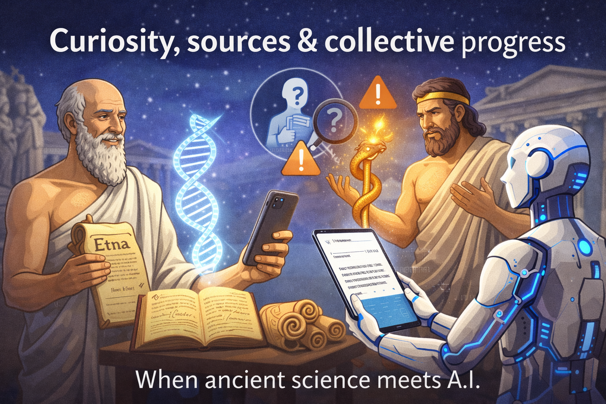
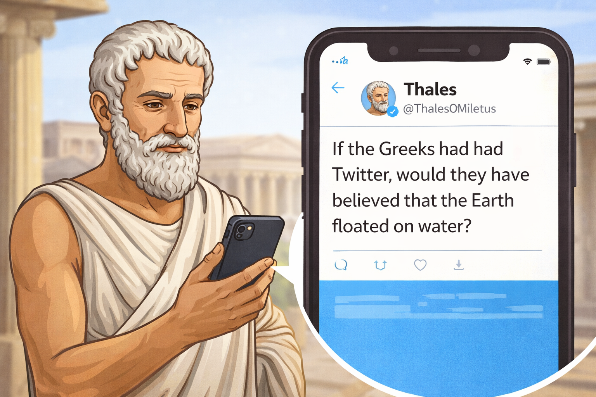

5 lessons about misinformation from ancient Greek and Roman scientist.
- Article's link : Article : 5 lessons
- Published : December 29, 2025.
- Author : Jemima McPhee
- Editor : Misha Ketchell
When Thales meets IA
Learning to doubt in order to approach the truth
References :
- senses (Latin term) : faculty or power of perceiving; perception, feeling, sensation, sense
- Also call : induction, reasoning that consists of moving from the particular to the universal.
- ratio (Latin term) : reason
- Also called : deduction, the inverse of induction, involves deducing new propositions from axioms and proven properties.
Exemple 1: Manilius says : they observed the appearance of the whole night sky and watched every star return to its original place […] by doing this repeatedly, they built up their knowledge.Selected quotes to summarize each lesson:
Exemple 2: The Aetna is an anonymous text that explains how volcanoes work. Its unknown author warns readers about two potential sources of misinformation: other authors and other people.- Lesson 1 : "Doubting everything or believing everything: these are two equally convenient strategies, both of which spare us from having to think." - Henri Poincaré
- Lesson 2 : "To err is human, to forgive, divin." - Alexander Pope.
Illustration
The courage to doubt
Exemple 3:In On the Nature of Things, Roman philosopher Lucretius proposed three different explanations for solar eclipses:
- the Moon passing in front of the Sun
- some other opaque body passing in front of the Sun, or
- the Sun’s light temporarily growing dim for some reason.
Selected quotes to summarize each lesson: :
- Lesson 3 :
"What we know is a drop in the ocean; what we don't know is an ocean."
- Isaac Newton, physicien - Lesson 4 : It is better to accept what we cannot prove than to pretend we know what we do not. - Lucretius
- Lesson 5 :"Curiosity is the first step towards truth." - Louis Pasteur
- © Untitled.
- Design: HTML5 UP
Illustration
Curiosity & collective progress
Exemple 4:"An ancient medical text from the school of Hippocrates called On the Sacred Disease sought to explain the causes of epilepsy."
Exemple 5:"The anonymous Aetna author says something similar: “Science is no place for genius.”"
Selected quotes to summarize each lesson:
Illustration

As we can see, distinguishing truth from falsehood has always been a problem, and its importance is proven time and again.
Illustration
